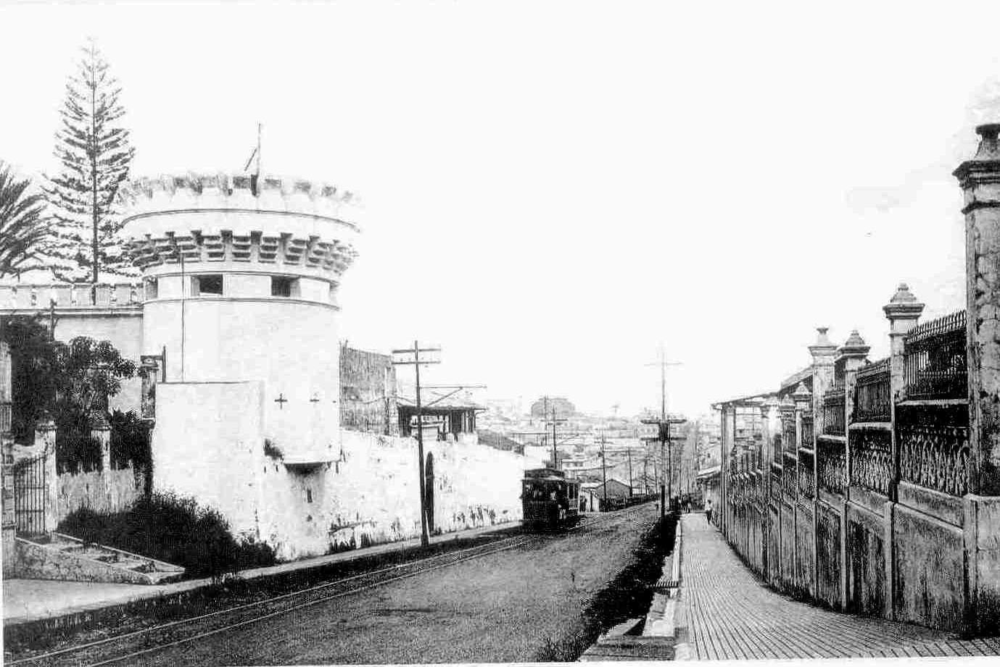
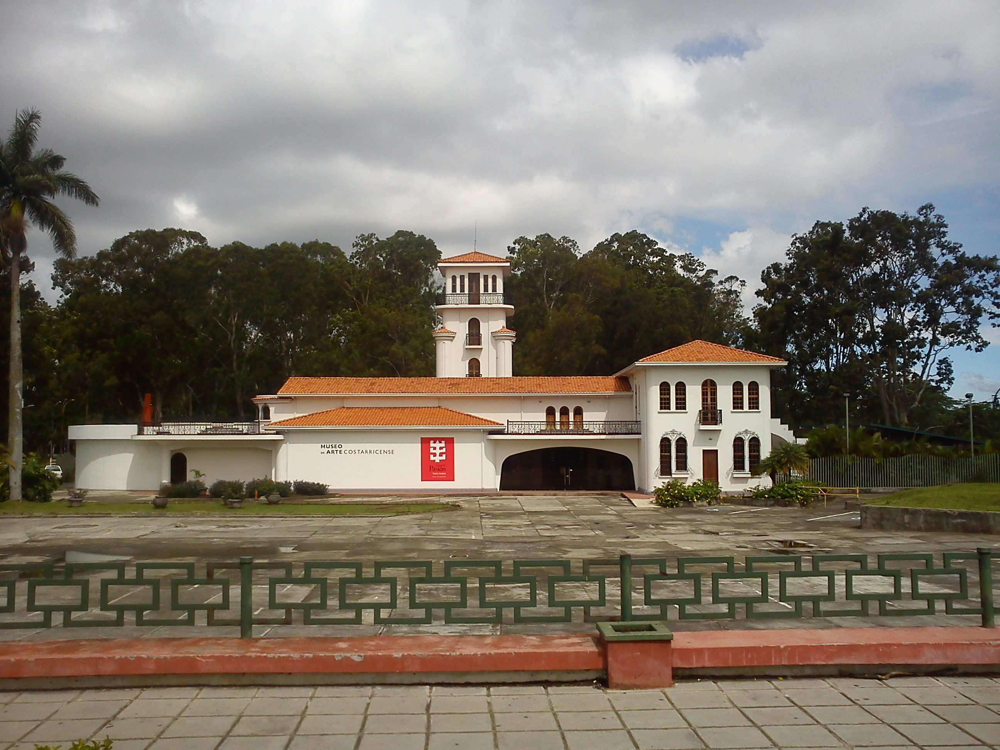
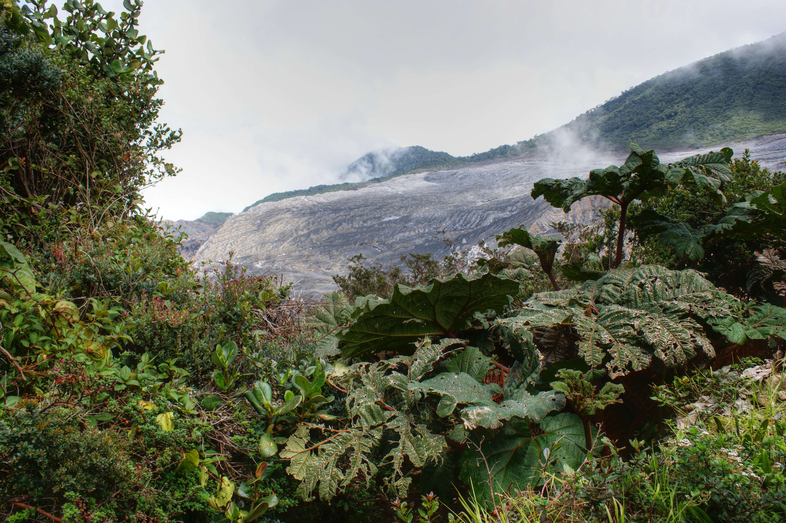
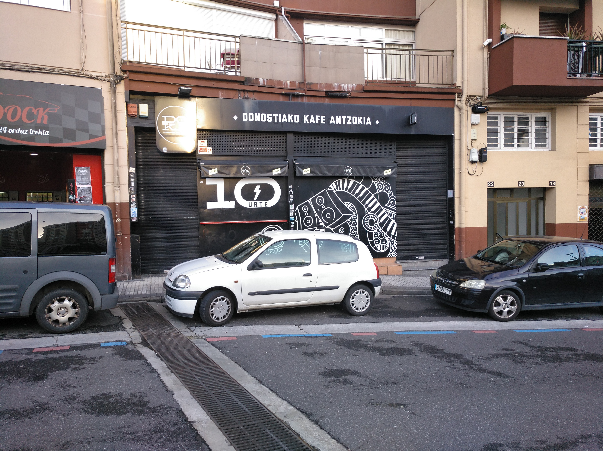
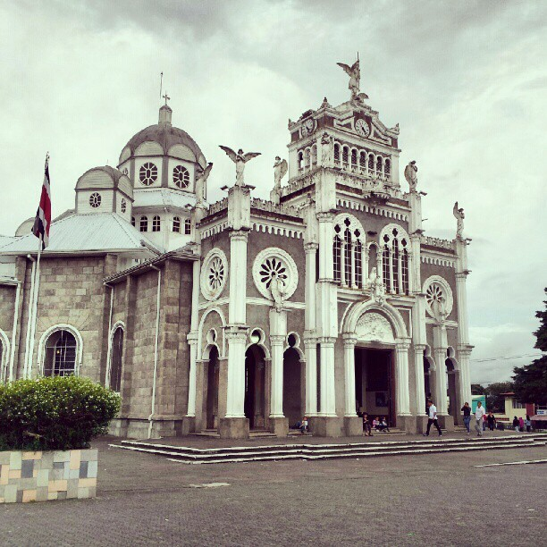
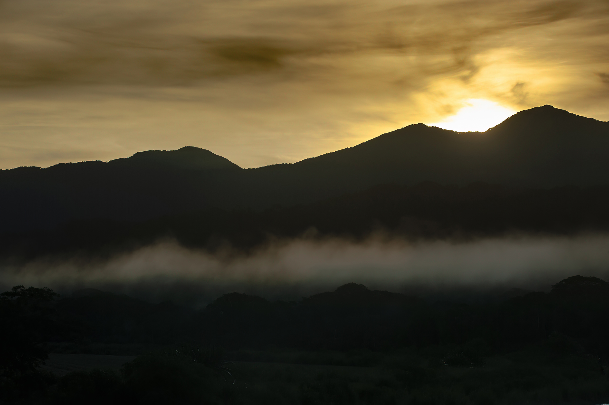
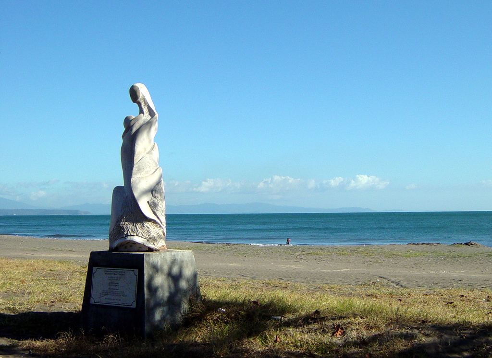
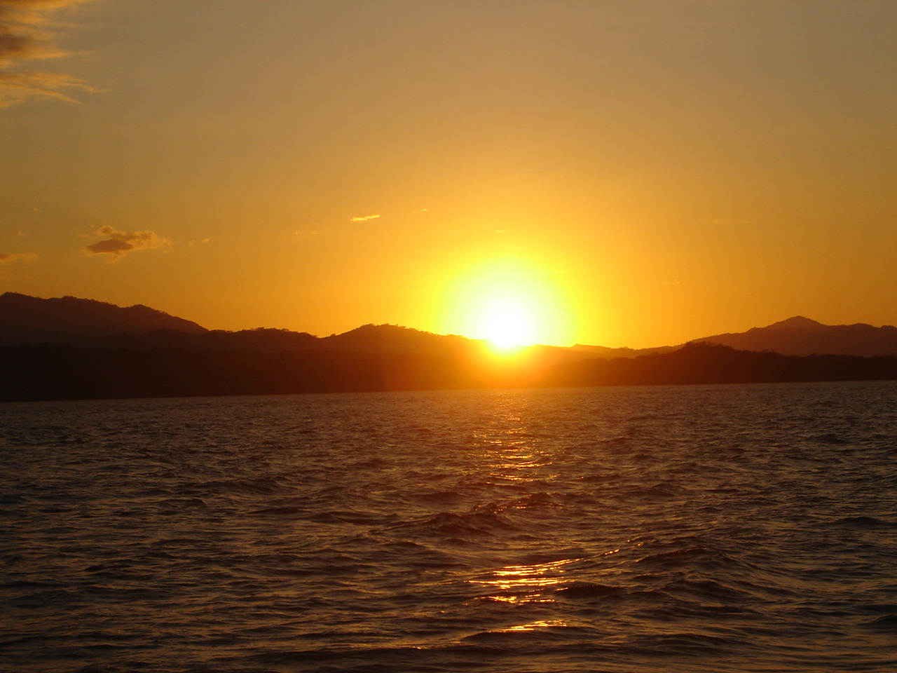

TRIP OVERVIEW
Day 1 – Museo Nacional de Costa Rica · Teatro Nacional · Museo de Arte Costarricense · Parque España
Day 2 – Poás Volcano · La Paz Waterfall Gardens · Doka Estate Coffee Tour · Basílica de Nuestra Señora de los Ángeles
Day 3 – Carara National Park · Tárcoles Bridge · Puntarenas Promenade · Golfo de Nicoya Sunset Cruise
Day 1
🏨 From Hotel: 🚕 10 min → Museo Nacional de Costa Rica
1. Museo Nacional de Costa Rica
↳ The national museum occupies a restored 1910 army fortress. Its courtyards, bullet-pocked towers, and butterfly garden frame galleries of pre-Columbian gold, colonial art, and natural history. The building was the site of the 1948 abolition of the Costa Rican army.

🚶 8 min · 🚕 4 min → Teatro Nacional
2. Teatro Nacional
↳ Built in 1897 with a coffee-export tax, the Teatro Nacional is Costa Rica's most significant civic building. The Italian Renaissance facade, gilded foyer, and painted ceiling depicting the coffee harvest create an extraordinary interior. Daytime guided tours access the auditorium and stage.

🚶 18 min · 🚕 7 min → Museo de Arte Costarricense
3. Museo de Arte Costarricense
↳ Costa Rica's national fine arts museum occupies a restored 1940 La Sabana airport terminal. The permanent collection spans 19th-century salon painting through contemporary Costa Rican abstraction. The rooftop gold salon depicts the nation's history in sculpted relief across 200 metres of continuous narrative frieze.

🚕 12 min → Parque España
4. Parque España
↳ A shaded plaza whose towering trees shelter Scarlet Macaws that roost here every evening at dusk — one of the few places where wild macaws reliably congregate in an urban setting. The park faces the INS Building, whose mural covers the entire exterior with pre-Columbian and colonial history.

🚕 12 min → hotel
Day 2
🏨 From Hotel: 🚕 1h 15min → Poás Volcano
1. Poás Volcano
↳ One of the world's most active volcanoes with a 1.5 km crater holding a turquoise acidic lagoon that periodically erupts geyser-like jets. The 400 m deep crater rim is accessible via a 20-minute paved walk from the visitor centre. On clear mornings the summit offers unobstructed views into the steaming basin.
🏛️ Daily 8:00am - 3:30pm
⏰ ~2hr
⚠️ Book timed-slot entry in advance at sinac.go.cr

🚕 25 min → La Paz Waterfall Gardens
2. La Paz Waterfall Gardens
↳ A private cloud-forest reserve built around five separate waterfalls. The main cascade at 37 m is accessed via a 3.5 km trail with canopy walkways, a hummingbird garden, a butterfly observatory, and wildlife enclosures. Single-stop combination of waterfall access and wildlife density.
No pictures found.
🚕 40 min → Doka Estate Coffee Tour
3. Doka Estate Coffee Tour
↳ A third-generation family coffee farm on the slopes of Poás Volcano, operating a 1920s wet-processing mill that is the last working antique mill of its kind in Costa Rica. The 90-minute walking tour follows the bean through fermentation, washing, and drying, ending with cupping of the estate's single-origin Arabica.

🚕 25 min → Basílica de Nuestra Señora de los Ángeles
4. Basílica de Nuestra Señora de los Ángeles
↳ The most important religious site in Costa Rica, a Byzantine-style basilica housing La Negrita — a 20 cm stone figure of the Virgin found here in 1635. The interior is lined with silver and gold ex-votos left by pilgrims. The annual August 2 pilgrimage draws 2 million on foot from across the country.

🚕 45 min → hotel
Day 3
🏨 From Hotel: 🚕 1h 20min → Carara National Park
1. Carara National Park
↳ A rainforest at the Pacific transition zone protecting the largest Scarlet Macaw population on the Central Pacific coast. The 2.5 km Las Araceas loop runs through primary forest where macaw flocks of 20 to 50 birds are routine. The park also protects caiman, howler monkeys, and 350 documented bird species.

🚕 5 min → Tárcoles Bridge
2. Tárcoles Bridge
↳ A road bridge over the Tárcoles River where the largest congregation of American crocodiles in Costa Rica gathers below. At any given hour 10 to 20 individuals can be observed sunbathing within meters of the railing. The crocodiles reach up to 5 m — a reliable, no-hike wildlife spectacle in under 30 minutes.

🚕 30 min → Puntarenas Promenade
3. Puntarenas Promenade
↳ The paseo marítimo runs 9 km along a narrow peninsula at the entrance to the Gulf of Nicoya, with the Pacific on the south side and the estuary on the north. The promenade faces the Nicoya Peninsula across open water and is the departure point for ferry crossings and sunset cruises.

🚶 5 min · 🚕 3 min → Golfo de Nicoya Sunset Cruise
4. Golfo de Nicoya Sunset Cruise
↳ A two-hour catamaran cruise into the Gulf of Nicoya at dusk, when frigate birds and brown pelicans follow the boat and bottlenose dolphins often ride the bow wave. The cruise crosses open water to small islets and returns under a Pacific sunset framed by the Nicoya Peninsula silhouette.

🚕 1h 30min → hotel
🗓️ Weekly Closures
Museums · Closed Monday
📅 Tours
Viator
↳ Full-day guided loop: Poás crater overlook and La Paz Waterfall Gardens Five Falls trail. Lunch at the La Paz lodge.
🕐 7:00am · ⏳ 10h · 👥 Max 14
🏨 ↔ 🚐
↳ Guided day to Carara rainforest for macaw spotting and Tárcoles Bridge for crocodile viewing. Naturalist guide included.
🕐 6:00am · ⏳ 8h · 👥 Max 12
🏨 ↔ 🚐
↳ A 3-hour walking tour of central San José: Teatro Nacional foyer, Plaza de la Cultura, and Parque España murals. Small group.
🕐 9:00am · ⏳ 3h · 👥 Max 10
🚶 20 min · 🚕 8 min
↳ Half-day guided visit to the Doka Estate wet-processing mill. Covers picking, fermentation, washing, drying, and cupping.
🕐 8:00am · ⏳ 5h · 👥 Max 16
🏨 ↔ 🚐
↳ Long-day guided trip to Arenal NP lava trail and evening hot springs session. Most-booked San José day trip on Viator. Lunch and hot springs entrance included.
🕐 6:30am · ⏳ 13h · 👥 Max 14
🏨 ↔ 🚐
GetYourGuide
↳ Full-day loop combining Poás crater viewing with La Paz butterfly observatory and waterfall trail. Lunch included.
🕐 7:00am · ⏳ 10h · 👥 Max 14
🏨 ↔ 🚐
↳ Morning departure to Carara with an expert naturalist guide for macaw and wildlife spotting, then Tárcoles Bridge crocodile stop.
🕐 6:30am · ⏳ 8h · 👥 Max 12
🏨 ↔ 🚐
↳ Three-hour guided walk through Teatro Nacional, Parque España, and the INS Building murals. Small group.
🕐 9:00am · ⏳ 3h · 👥 Max 8
🚶 18 min · 🚕 7 min
↳ Long-day excursion to Arenal NP and volcanic hot springs. Most-booked GetYourGuide day trip from San José. Lunch and hot springs entrance included.
🕐 6:30am · ⏳ 13h · 👥 Max 16
🏨 ↔ 🚐
↳ Half-day tour to Doka Estate with mill walk, cupping session, and scenic drive through Alajuela coffee country.
🕐 8:00am · ⏳ 5h · 👥 Max 12
🏨 ↔ 🚐
TripAdvisor
↳ Three-hour small-group walk through the Teatro Nacional, Parque España, and Plaza de la Cultura with a local guide.
🕐 9:00am · ⏳ 3h · 👥 Max 8
🚕 8 min
☕ Cappuccino
Caféoteca · 4.8⭐ · 320+ reviews
🏛️ Monday - Saturday 7:00am - 6:00pm
🚫 Closed Sunday
🚶 4 min · 🚕 2 min
Icafé Escalante · 4.6⭐ · 210+ reviews
Stiefel Coffee · 4.7⭐ · 190+ reviews
🏛️ Monday - Saturday 7:00am - 6:00pm
🚫 Closed Sunday
🚶 8 min · 🚕 4 min
Cafeína · 4.5⭐ · 160+ reviews
🏛️ Monday - Saturday 8:00am - 5:00pm
🚫 Closed Sunday
🚶 10 min · 🚕 4 min
Café Mundo · 4.5⭐ · 280+ reviews
🏛️ Monday - Friday 8:00am - 10:00pm
🚫 Closed Saturday & Sunday
🚶 12 min · 🚕 5 min
🫕 Restaurants Near Hotel
Silvestre · 4.8⭐ · 440+ reviews
↳ Farm-to-table tasting menu using hyper-local produce.
🏛️ Tuesday - Sunday 12:00pm - 10:00pm
🚫 Closed Monday
🚶 3 min · 🚕 2 min
Mantras Veggie Café · 4.6⭐ · 370+ reviews
↳ Plant-based café with rotating bowls and smoothies.
🏛️ Daily 11:00am - 9:00pm
🚶 5 min · 🚕 2 min
Restaurante Nueve · 4.5⭐ · 290+ reviews
↳ Neighborhood restaurant serving Costa Rican casado and grilled meats.
🏛️ Monday - Saturday 11:30am - 9:30pm
🚫 Closed Sunday
🚶 7 min · 🚕 3 min
Döner Deli · 4.6⭐ · 220+ reviews
↳ Turkish-inspired wraps. Popular Barrio Escalante lunch spot.
🏛️ Daily 11:00am - 9:00pm
🚶 9 min · 🚕 4 min
La Ventana · 4.5⭐ · 180+ reviews
↳ Costa Rican-Mediterranean fusion in a converted house.
🏛️ Tuesday - Sunday 12:00pm - 10:00pm
🚫 Closed Monday
🚶 11 min · 🚕 4 min
🍽️ Downtown Restaurants
Restaurante Grano de Oro · 4.7⭐ · 1800+ reviews
↳ Landmark dining room in a Victorian mansion hotel.
🏛️ Daily 7:00am - 10:00pm
El Patio del Balmoral · 4.5⭐ · 920+ reviews
↳ Open courtyard restaurant. Traditional Costa Rican cooking.
🏛️ Daily 6:30am - 10:00pm
Café Teatro Nacional · 4.4⭐ · 680+ reviews
↳ Espresso and pastries inside the gold-and-marble foyer.
🏛️ Monday - Saturday 9:00am - 5:00pm
🚫 Closed Sunday
La Esquina de Buenos Aires · 4.6⭐ · 560+ reviews
↳ Argentine parrilla. Wood-fired steaks and empanadas.
🏛️ Monday - Saturday 11:30am - 10:00pm
🚫 Closed Sunday
Tiquicia · 4.5⭐ · 430+ reviews
↳ Traditional Costa Rican 1920s house. Gallo pinto and olla de carne.
🏛️ Tuesday - Sunday 11:00am - 9:00pm
🚫 Closed Monday
🍮 Local Tastes
Gallo Pinto
↳ Rice and black beans cooked together with Salsa Lizano, served with scrambled eggs, tortillas, and fried plantains. The national dish — every soda in the city serves it at breakfast.
Casado
↳ The standard Costa Rican lunch plate: rice and beans side by side, a protein with plantains and salad. The staple of every soda across the Central Valley.
Chifrijo
↳ A bowl of frijoles, white rice, chicharrón, pico de gallo, and avocado with tortilla chips. Invented in the city in the 1990s and now a staple bar food across Costa Rica.
Café Chorreado
↳ Coffee brewed through a cloth sock filter — the traditional Costa Rican method. The country produces some of the world's finest Arabica; this preparation lets the bean speak without paper interference.
🎭 Shows, Performances & Concerts
No exceptional shows, performances, or concerts in San José.
🚆 Train Stations Near Hotel
🚊 Estación al Pacífico
↳ Pacific line trains → Caldera port and Puntarenas coast.
🚶 38 min · 🚕 10 min
⛲️ Day Trips by Train
No day trips from San José.
⭐ Michelin Restaurants
No Michelin-starred restaurants in San José.